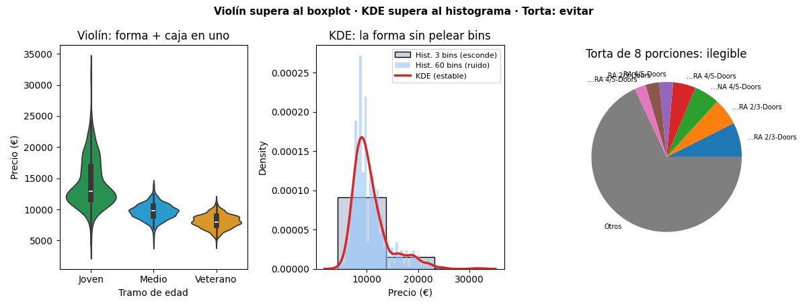

Unidad 3 · Visualización de datos · Lección 0045
Violín, densidad y torta: dos upgrades y un gráfico prohibido
Win de hoy: el violín muestra lo que el boxplot esconde (la forma), la KDE dibuja la distribución sin pelear con bins… y la torta de 8 porciones demuestra por qué no usar tortas.
1 · Violín = boxplot + forma
El boxplot (lección 0001) resume en 5 números pero esconde la forma: dos distribuciones distintas (una joroba vs dos) pueden dar la misma caja. El violín suma el contorno de densidad a los costados: lo ancho = muchos autos ahí; lo angosto = pocos. Adentro lleva la misma caja (mediana, cuartiles).
2 · KDE: el histograma sin bins
El histograma depende de cuántos contenedores elijas: con 3 esconde todo, con 60 muestra ruido. La KDE pone una mini-campana sobre cada dato y las suma: una curva suave que no depende de bins. Ventaja honesta: revela modas y asimetrías; costo honesto: suaviza de más si hay pocos datos, e inventa densidad donde no hay (cerca del 0 €, donde ningún auto existe).

Lectura: (1) el violín joven muestra cola larga hacia arriba (premium jóvenes); la caja sola no la contaría. (2) La KDE confirma el sesgo a derecha de Price (cola larga, ver lección 0046). (3) La torta: 8 etiquetas rotadas, porciones indistinguibles. Con 3 porciones zafa; con 8+ es sopa.
Regenerar la figura (mismo resultado versionado en assets/img/toyota/):
python scripts/make_figures.py --only violin-densidad-torta3 · Por qué la torta sobredimensiona (los problemas prometidos)
| Problema | Qué pasa | En la Fig. 1 |
|---|---|---|
| Ángulos, no largos | El ojo compara mal ángulos: 12 % vs 15 % se ven iguales | Porciones 3–7 indistinguibles |
| Etiquetas rotadas | Con 5+ porciones, el texto se pisa o se corta | Nombres truncados con «…» |
| Sin orden natural | ¿Empieza arriba? ¿Cuál es primera? Nadie lo sabe | El ojo da vueltas |
| Exige el 100 % | Si falta «otros», las porciones mienten | «Otros» es la porción mayor |
Regla de clase: torta solo con ≤ 4 porciones bien distintas; en todo lo demás, barras horizontales ordenadas (lección 0009).
4 · Los tres en 10 líneas (reproducí la Fig. 1)
import pandas as pd, seaborn as sns, matplotlib.pyplot as plt
df = pd.read_csv("../ToyotaCorolla.csv")
df["Tramo"] = pd.qcut(df["Age_08_04"], 3, labels=["Joven","Medio","Veterano"])
sns.violinplot(data=df, x="Tramo", y="Price", inner="box") # violín
plt.figure(); sns.kdeplot(data=df, x="Price") # KDE
plt.figure(); df["Model"].value_counts().head(7).plot.pie() # la torta mala
plt.show()Tu turno: hacé el violín de KM por Fuel_Type:
el diésel muestra joroba arriba (muchos km) que el boxplot aplana.
5 · Quiz (auto-chequeo inmediato)
6 · Fuente primaria y cierre
Para profundizar (1 fuente): Wilke, Fundamentals of Data Visualization — cap. 7–9 (distribuciones) y 6 (por qué no tortas). Más contexto en RESOURCES.
Siguiente: 0046 · Transformaciones: log para la asimetría y discretización en tramos con sentido.